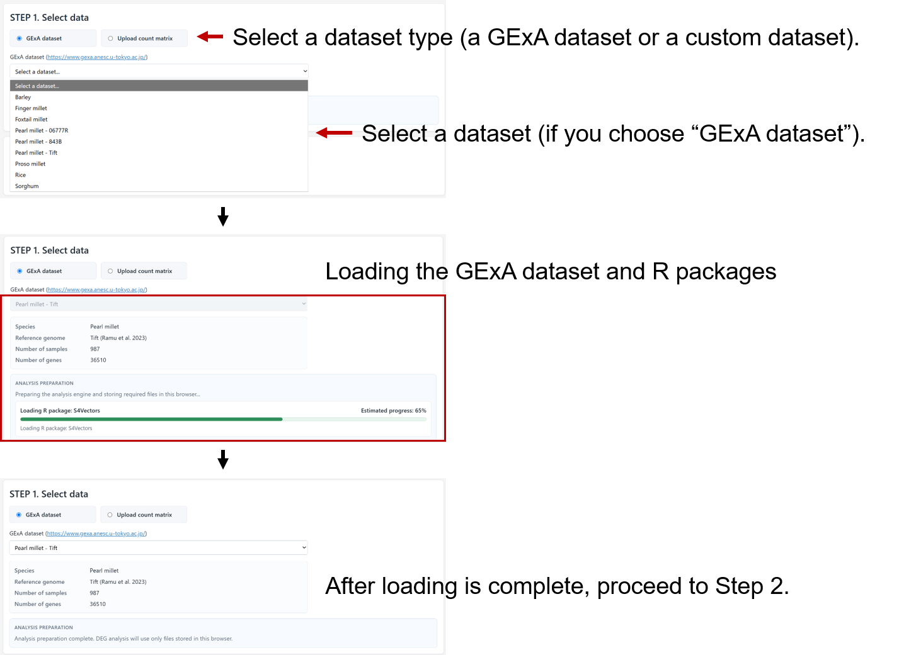
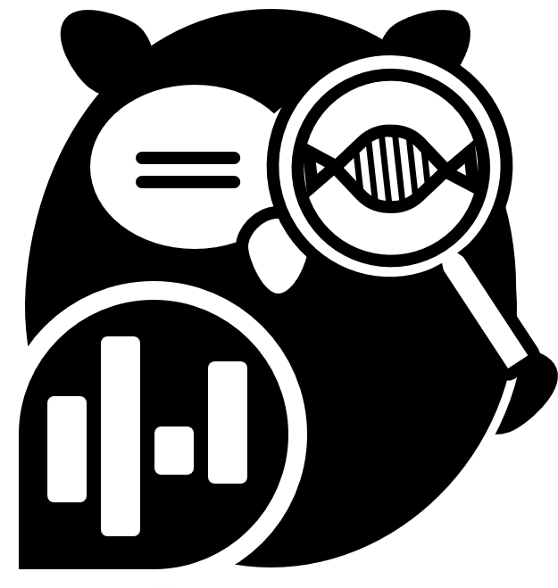
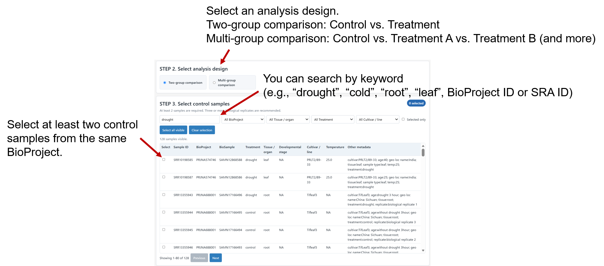
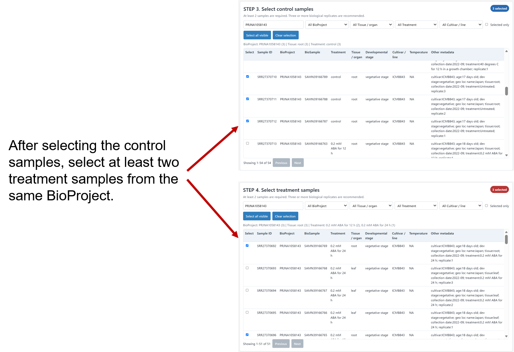
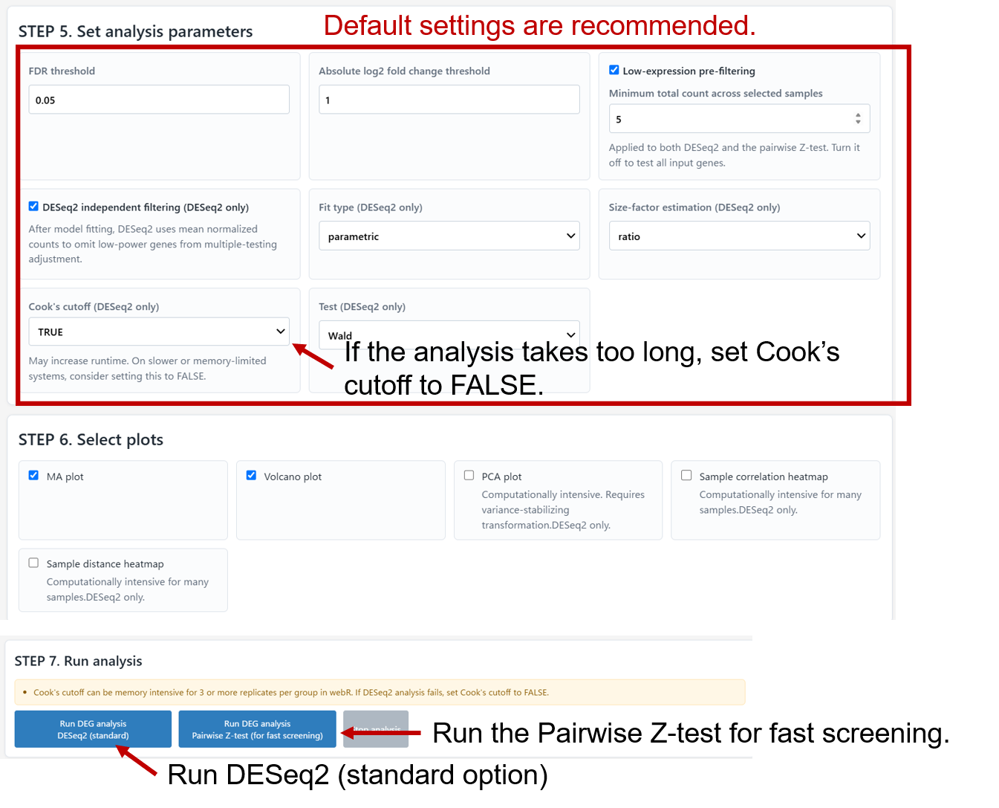
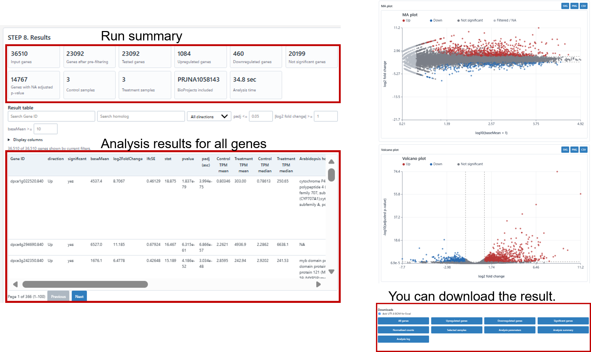

1. Select and load a dataset
Choose GExA dataset or Upload count matrix. For a GExA analysis, select a dataset from the list and wait until data loading and analysis preparation are complete.

Differential Expression Analysis Resource on the Web (Lite)

DEAR-OWL performs two-group and one-factor multi-group differential gene expression analysis in the browser.
Use this page to prepare input data, select samples, set parameters, run the analysis, and interpret the output.
DESeq2 uses raw integer counts for statistical testing. TPM values may be shown as expression context, but they are not used for differential expression testing.
The setup steps define the analysis. Select data, choose the design, assign samples, set parameters, select plots, and start the run.
The status strip shows progress and estimated memory use.
The control and treatment tables allow sample search, metadata filtering, and sample selection.
After analysis, the Results section shows summary values, the result table, plots, download files, and the analysis log.
A statistically significant result is not always biologically meaningful if the two groups come from different projects or poorly matched sample conditions.
Multi-group comparison is for one categorical factor with three or more groups. When the R/DESeq2 button is used, the global multi-group question is tested with LRT, while selected two-group contrasts are reported with Wald results. Batch terms, paired designs, interactions, and time-series models are not included in this mode.
Reference vs all compares every non-reference group against the selected reference group. All pairwise creates every pairwise contrast once. Custom contrasts lets you choose numerator and denominator groups manually.
For B vs A, B is the numerator and A is the denominator. A positive log2 fold change indicates higher expression in B than in A. Up means significantly higher in the numerator group.
LRT is the DESeq2 test for the overall multi-group question. It tests whether expression differs in at least one group compared with the reduced model without group. It does not identify which specific groups differ, and it should not be interpreted with Up or Down direction or a log2 fold change threshold.
Wald results are used for the selected pairwise questions, such as B vs A or C vs B. These tables provide log2 fold change, Up/Down direction, and MA/volcano plots. Benjamini-Hochberg adjustment is performed separately within each pairwise comparison.
High-speed pairwise Z-test performs independent pairwise comparisons using library-size-normalized log2 CPM values. No global or omnibus test is performed. Multiple-testing correction is always Benjamini-Hochberg FDR; there is no Correction mode selector.
Use Venn-style overlap for 2 or 3 selected gene sets. When 4 or more sets are selected, use the UpSet-style intersection table. Up and Down are treated as separate gene sets.
Three or more biological replicates per group are recommended.
Run DEG analysis R/DESeq2 (standard) runs the existing R/DESeq2 analysis and is recommended for formal analysis. Run DEG analysis High speed pairwise Z-test (ultrafast) runs the rapid pairwise Z-test.
FDR threshold, absolute log2 fold-change threshold, and the optional low-expression pre-filter apply to both methods. A gene is counted as Up or Down only when both the FDR and fold-change thresholds are met.
Low-expression pre-filtering is shared by DESeq2 and the pairwise Z-test. When enabled, genes whose raw counts sum to less than Minimum total count across all selected samples are excluded from testing. Turning it off disables the threshold and tests every input gene.
The default size-factor estimation is ratio. For sparse GExA-style matrices, poscounts may help if DESeq2 reports normalization problems. All parameters labeled (DESeq2 only) are ignored by the High speed pairwise Z-test.
FDR is the adjusted p-value after testing many genes. A lower value is stricter and gives fewer DEG. This threshold applies to both methods; the Z-test always uses Benjamini-Hochberg adjusted values.
This controls the minimum effect size for Up, Down, and NS classification in both methods. A value of 1 means a two-fold increase or decrease.
When low-expression pre-filtering is enabled, genes with total counts below this value across selected samples are removed before testing in both methods. The field is disabled when pre-filtering is turned off.
DESeq2 can remove genes with low statistical power during result generation. This is usually helpful.
This controls dispersion fitting in DESeq2. Use parametric first. Try local or mean only if DESeq2 reports a fit problem.
Use poscounts for sparse matrices with many zeros. This is often suitable for large public GExA-style datasets.
Cook's cutoff detects influential samples and is enabled by default. It may increase runtime; on slower or memory-limited systems, consider setting it to FALSE.
This setting applies to two-group DESeq2 runs. In multi-group DESeq2 mode, the app automatically uses LRT for the global test and Wald results for the selected pairwise contrasts.
If you are uncertain, start with the default settings. Parameters labeled (DESeq2 only) remain visible in Step 5 but do not affect High speed pairwise Z-test results.
In two-group mode, Up means higher expression in treatment than in control. In multi-group pairwise tables, Up means higher expression in the numerator group than in the denominator group. Global LRT rows do not have Up or Down direction.
This is the average normalized count across selected samples. Very low values should be interpreted with caution.
This is the estimated effect size for pairwise results. Positive values indicate higher expression in treatment for two-group mode, or in the numerator group for multi-group pairwise contrasts. Global LRT results should not be read as a single pairwise log2 fold change.
pvalue is the raw test result. padj is corrected for many tested genes and should usually be used for DEG selection.
TPM values help describe expression level in each group. They are not used by DESeq2 for statistical testing.
Annotation and homolog columns help assign possible gene function. They should be checked with external evidence when important.
This example shows a two-group comparison using a GExA dataset. Select samples from one BioProject and use the displayed metadata to keep the comparison biologically consistent.
Choose GExA dataset or Upload count matrix. For a GExA analysis, select a dataset from the list and wait until data loading and analysis preparation are complete.

Select Two-group comparison for a control-versus-treatment analysis. Use the keyword search and metadata filters to find suitable control samples, then select at least two samples from the same BioProject.

After choosing the control group, select at least two treatment samples from the same BioProject. Check the treatment, tissue, developmental stage, cultivar, and other metadata before proceeding.

Start with the default parameter settings. Run DESeq2 for the standard analysis, or use the Pairwise Z-test for fast screening. If browser resources are limited, setting Cook's cutoff to FALSE may help.

Review the run summary, result table, MA plot, and volcano plot. Filter the table by adjusted p-value or effect size as needed, then download the result files that support your follow-up analysis.

DEAR-OWL: a fully browser-based hybrid resource for instant or precise differential gene expression analysis
Kota Kambara, Sintho Wahyuning Ardie, Daisuke Tsugama
bioRxiv 2026.07.28.741369; doi: https://doi.org/10.64898/2026.07.28.741369